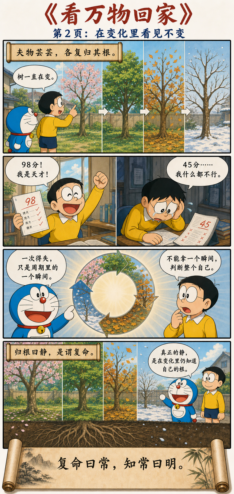
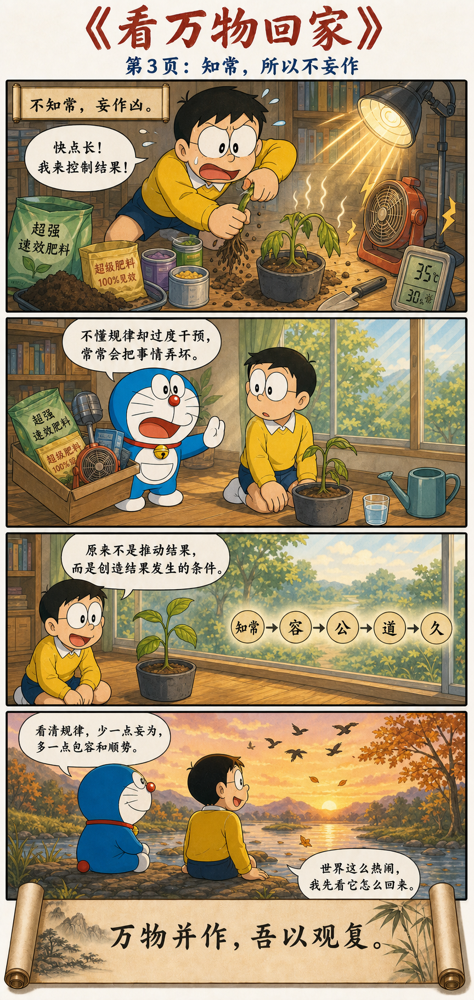

在万物的变化里，看见它们怎样回来
致虚极，守静笃。
万物并作，吾以观复。
夫物芸芸，各复归其根。
归根曰静，是谓复命。
复命曰常，知常曰明。
不知常，妄作凶。
知常容，容乃公，公乃王，王乃天，天乃道，道乃久。
没身不殆。
让心空下来，才看得见完整的周期
让内心达到空明，稳稳守住宁静。万物同时生长、变化，我从中观察它们怎样循环往复。万物纷纷扰扰，最终都各自回到自己的根本；回到根本叫作静，也就是回归本来的生命秩序。
认识这种回归，便认识了恒常的规律；认识规律，才是真正的明智。不懂规律却任意妄为，容易给自己招来祸患。知道规律的人能够包容，能够包容才可能公正；由此走向更大的整体，顺应天地与道，也就能够长久。
从心里的嘈杂，走到万物的根



“虚”不是空无，而是不把心塞满
“致虚极”不是让人变得没有想法，而是先放下那些占满内心的欲望、成见与情绪。心一旦被“我必须赢”“事情必须照我的想法发展”填满，眼前所见就只剩下对自己有利或不利。
“守静笃”也不是隔绝世界。外界依然喧闹，事情依然发生，只是内心不再被每一次变化立刻拖走。静下来，是为了恢复观察的能力。
不要只看结果，要看完整周期
花开、叶落，人事兴衰，世界从未停止变化。
先退后一步，不把一个瞬间当成全部。
看见循环，也看见变化背后的秩序。
老子说的不是“万物并作，吾以控制”，也不是“万物并作，吾以竞争”，而是“吾以观复”。真正的观察，需要时间：看它怎样发生、怎样兴盛、怎样衰落，又怎样回到根。
真正的静，是知道自己的根在哪里
树木的枝叶随四季改变，根却让它始终还是那棵树。一个人的成绩、职位、收入与评价也会起落，但它们只是生命周期中的状态，不是对整个人的最终判决。
今天被肯定，不必立刻把自己想成天才；明天遭到拒绝，也不必把自己判成失败者。能够越过一个瞬间，看见更长的周期，就是“归根曰静”。
一次得失，只是周期里的一个瞬间。
真正的“明”，是透过变化看见规律
老子所说的“常”，不是世界永远保持原样，而是那些在反复变化中依然成立的规律：事物有盛衰，情绪有起落，财富会聚散，方法会过时，强行催促常常适得其反。
不知常的人，容易在上升时相信自己永远不会失败，在低谷时相信困境永远不会结束；也容易为了马上得到结果而过度行动、过度干预。这便是“不知常，妄作凶”。
看见规律以后，心会慢慢变宽
真正理解世界的变化之后，人就不再坚持“事情必须按照我的想法发展”。能够容纳差异，才可能摆脱狭隘的自我；越少被私欲牵引，也就越接近天地自然的秩序。
生命虽是沧海一粟，也要向永恒伸展
让生命变得有厚度。若从宇宙的尺度来看，时间长河奔流不息，天地无边无际，那么人是什么呢？不过沧海一粟。
但这一粟，也要努力跨越永恒。永恒一定不是局部的变化：不是一时的成败、得失与荣辱，也不是某个瞬间里被无限放大的自我。它更像是穿过这些变化之后，仍然留下来的方向、价值与秩序。
人在时间里如此微小，仍可以让有限的生命，接近一种更长久的东西。
静，是从蛮力转向条件
万物依然在生长，人依然需要行动。老子反对的不是行动，而是不了解规律却急着控制一切。拔一棵苗不能让它长快，堆更多肥料、照更强的灯，反而可能毁掉它。
成熟的行动，是提供阳光、水、土壤与时间；成熟的管理，是搭好结构、说清目标并给予空间；成熟的研究，是理解问题之后建立条件，让结果自然发生。
不要用今天，给整个人生下结论
今天论文中了，不等于以后不会被拒；今天被老板批评，也不等于自己没有价值。外界的一次反馈，只是“万物并作”中的一个瞬间。它会发展，也会转化。
遇到得失时，不妨先问三个问题：这件事处在什么周期？我看到的是一个瞬间，还是反复出现的规律？此刻真正需要的是更用力，还是把条件重新整理好？
在变化中，重新获得内在秩序
第十六章给出的道路很清楚：先让内心空明而安静，观察万物的完整变化；从循环中发现规律，知道什么不该妄为；最后由知常走向包容、公正与长久。
万物纷然，我且静观。
不困于一时的盛衰，只看它从何处来，又向何处归。